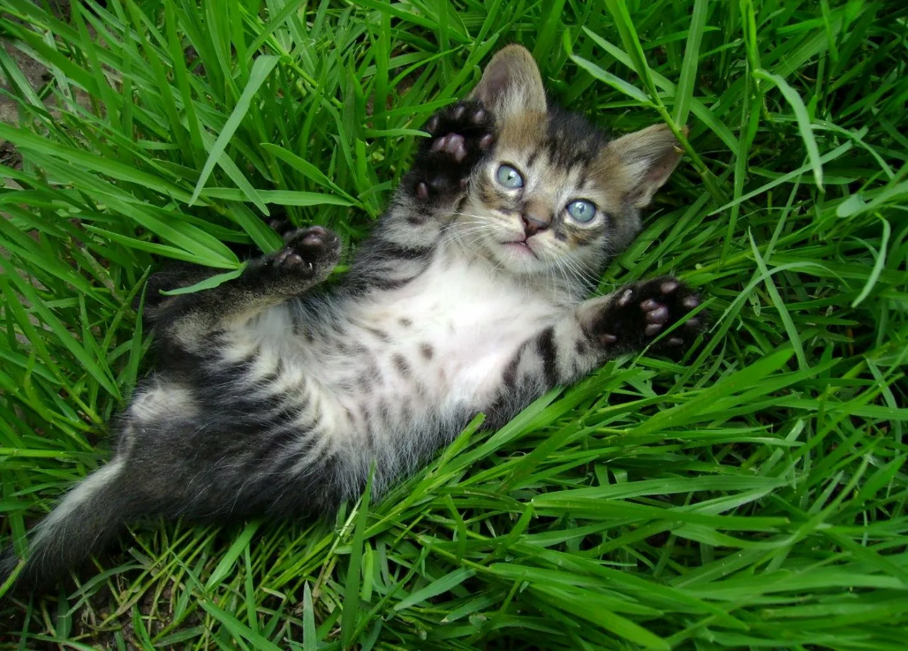
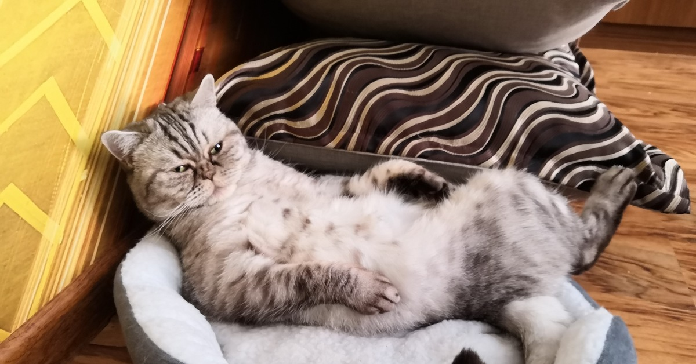

Приют семи котов
Официальный сайт
История
-
Список наших котков
Мерси
Рыжий котик
Гиря
Белый котик
Чижик
Серый котик
И много других!
Наши приюты
Россия, Москва ул. Тверская, д. 15
США, Нью-Йорк 5th Avenue, #240, New York, NY 10001
Франция, Париж Rue de Rivoli, 104, 75001 Paris
Япония, Токио 渋谷区神南1丁目 - 7-1, 渋谷, 東京 150-0041
Австралия, Сидней George St, 125, Sydney NSW 2000
Давным давно, ещё когда не было компьютеров, молодой парень Ульям сказал:
мне грусто от того, сколько много брошеных котиках на улицах, я сделаю домик для всех котиков!после чего он стал собирать брошенных котиков по всей планете, что бы у каждого котика был свой домик.